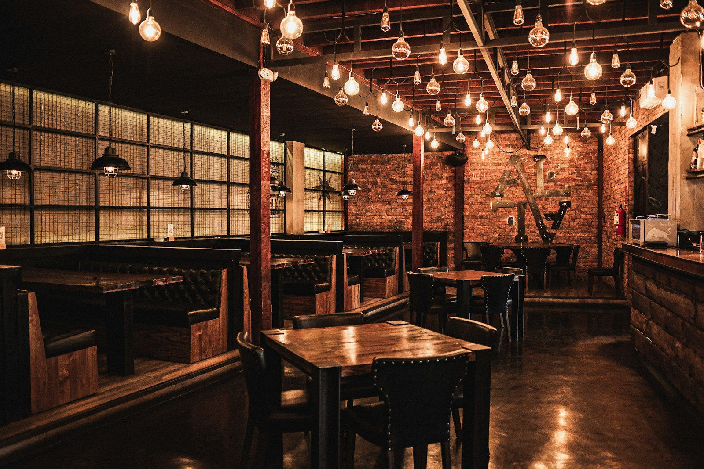
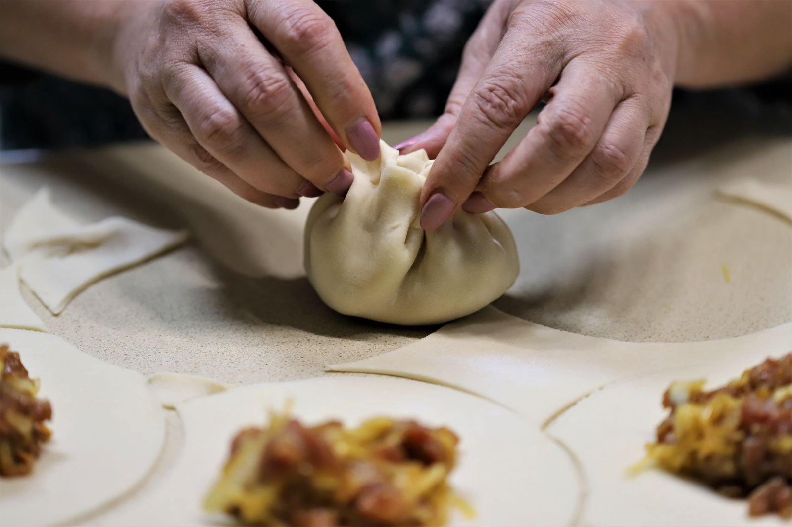
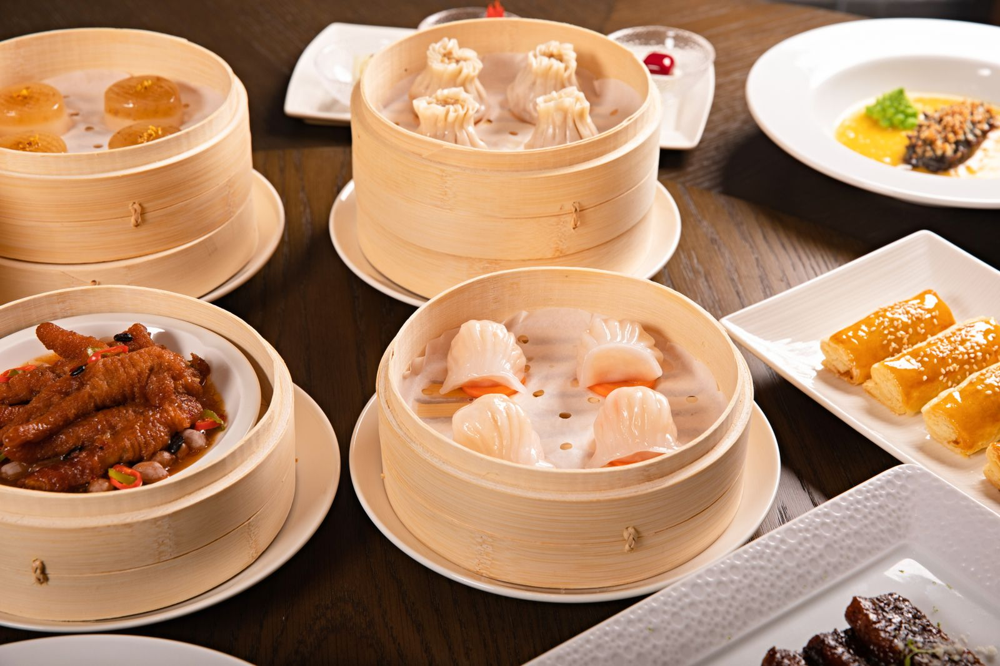
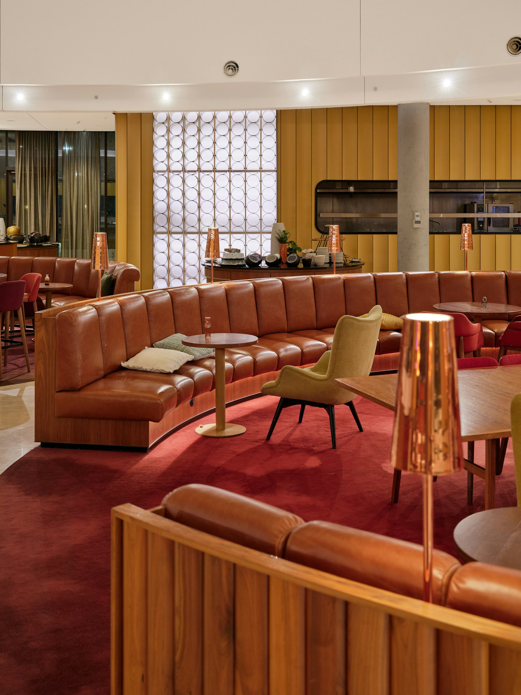

Fresh Ingredients
Produce, aromatics and fillings chosen for flavour and prepared in small, frequent batches.

A neighbourhood dim sum house built around handcrafted food, warm service and tables that are always better with company.
Our Story
Golden Steam Dim Sum House began with a simple idea: that the best meals are the ones you share. Dim sum has always been a social way of eating — many small dishes, one table, and plenty of time to talk between baskets.
Our kitchen prepares dumplings, buns and classic sides the traditional way: dough rested and rolled thin, fillings mixed in small batches, and everything folded by hand while service is running. We keep the menu focused so every basket that leaves the kitchen is one we are proud to put on your table.
Whether it is your first dim sum or your fiftieth, our team is happy to explain the dishes, suggest pairings and help you order the way you like to eat.

Made for sharing
Since day one
Our Food Philosophy
Simple principles that decide how we shop, prep, cook and serve every day.
Produce, aromatics and fillings chosen for flavour and prepared in small, frequent batches.
Wrappers rolled, pleats closed and buns shaped by hand — imperfection is part of the charm.
Familiar seasoning and classic combinations, kept honest rather than over-complicated.
Steam timing matters — baskets go out when they are ready, not when they are convenient.
The har gow you order tonight should taste like the one you loved last month.
Dish descriptions, dietary labels and prices on this website are editable sample content and are not verified allergen declarations.
Our Kitchen
Four steps that repeat all day long — and the reason every basket arrives hot.

Step 01
Wrappers rolled thin and filled in small batches through the day.

Step 02
Seasoned, mixed and rested so the flavour holds up to steaming.

Step 03
Baskets stacked over rolling steam and timed by eye and experience.

Step 04
Straight from steamer to table, with tea poured alongside.


Our Dining Experience
Dim sum works for almost any occasion — that is part of its appeal. Our dining room is set up for easy conversation and comfortable, unhurried meals.
Family gatherings
Tables sized for grandparents, kids and everyone in between.
Friendly atmosphere
Relaxed service with time to explain dishes and make recommendations.
Comfortable seating
Room to settle in for a long brunch or a quick midday basket.
Shared dining
Plates made for the middle of the table, not just one person.
Weekend experiences
A dedicated brunch rhythm when the weekend slows everything down.
We saved you a seat
Browse the menu, pick your favourites and let us take care of the steamer.